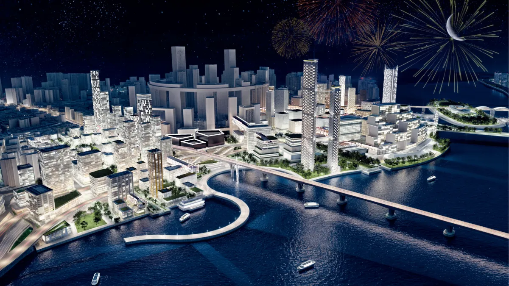
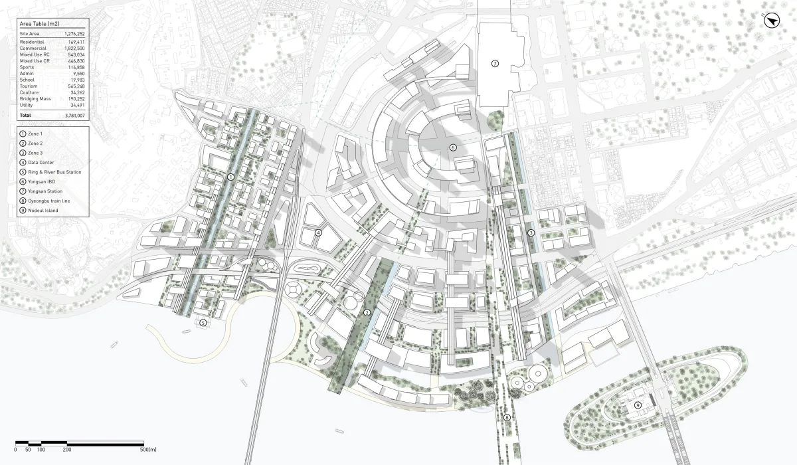
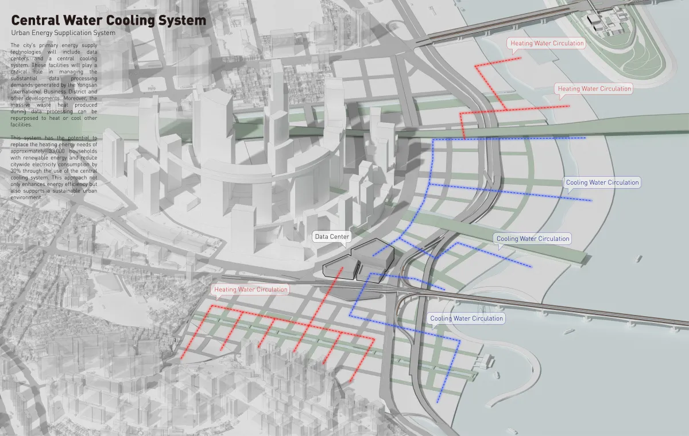
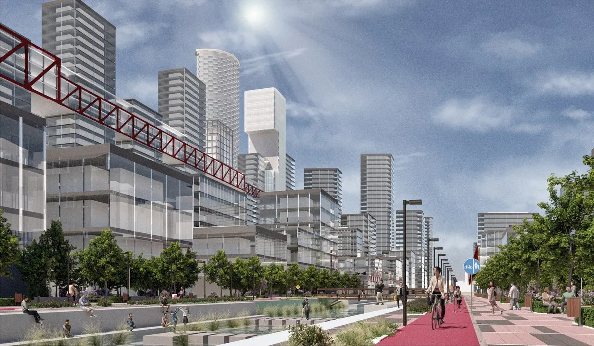
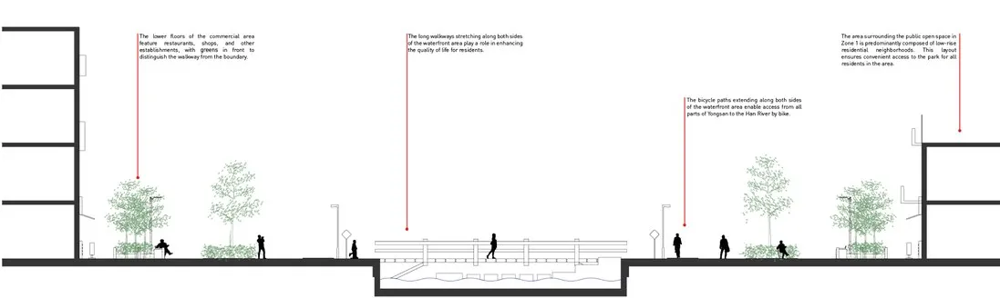
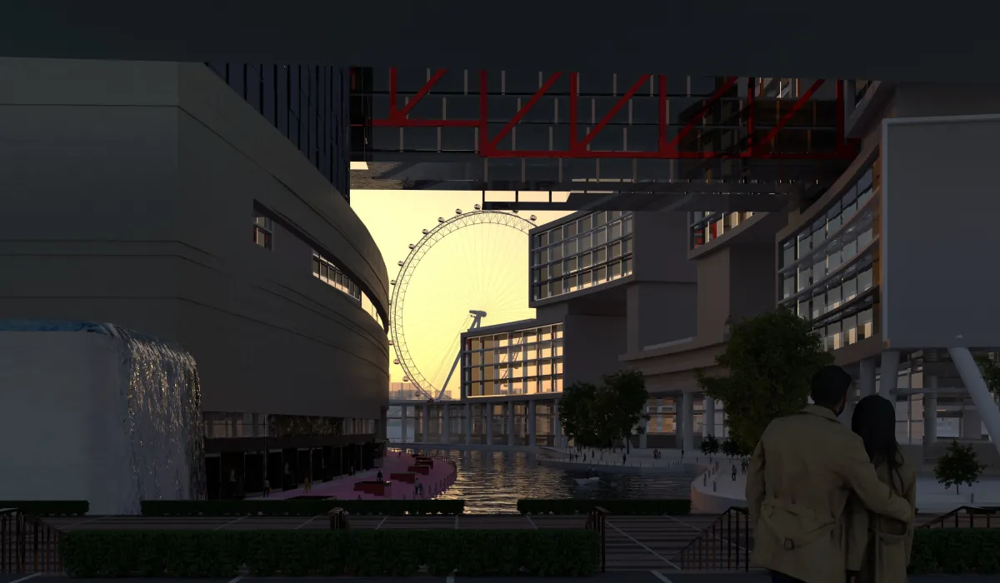
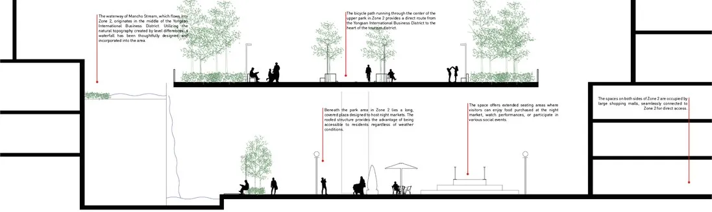
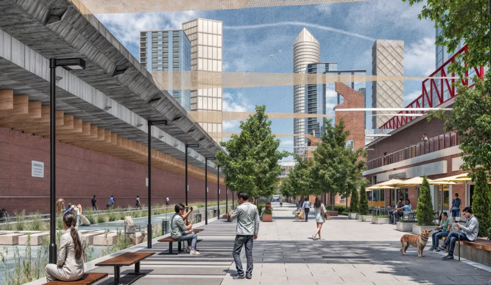
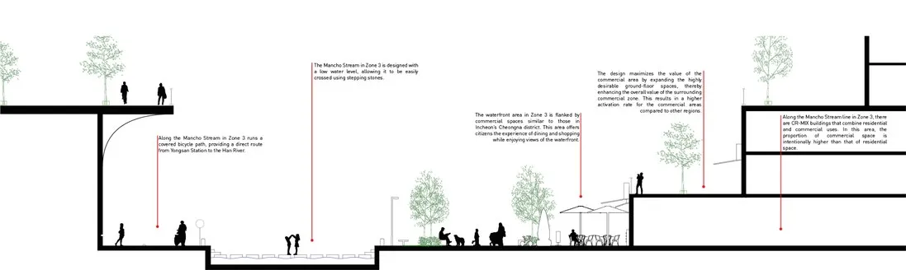
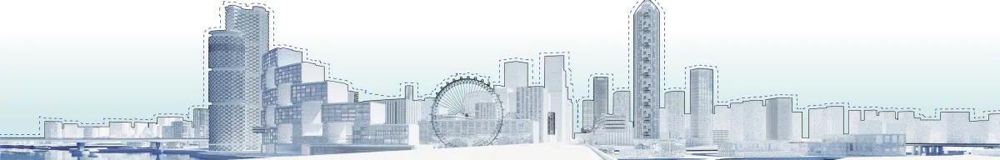

Yongsan Riverway
용산 한강변 도시설계
Waterfront Urban Design, New Face of Han River
물길을 되살려 한강과 도심을 다시 잇고, 데이터센터의 폐열을 도시의 에너지로 돌린다.

복개된 만초천을 용산국제업무지구에서 한강까지 흐르는 물길로 되살려 뼈대로 삼았다. 물길을 따라 세 구역을 두고, 구역마다 고유한 공공공간을 준다. 강변북로 위를 건너는 브릿지 매스는 도심과 수변을 이어 대상지를 관광 거점으로 바꾼다.
대상지 옆 KT 데이터센터는 하루 약 3.6TJ, 33,000가구분의 열을 내보낸다. 이 폐열을 냉온수 배관으로 돌려 지구 전체의 냉난방에 쓴다.
Master Plan

Energy Loop

Zones






Skyline
